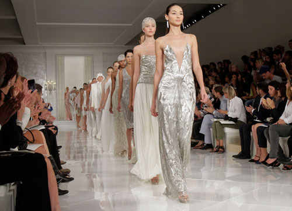

Bellezze in passerella e sfilate di moda: giugno con grandi eventi allo Chalet Al Bacio
RECALE
Lo Chalet al Bacio di via Municipio a Recale sempre più punto di riferimento per le serate by night del comprensorio.Un mese di giugno ricco di eventi, tra questi ben quattro serate deicate alla moda e alle bellezze in passerella.Il 9 giugno l’appuntamento con NEW TALENT ARTIST, una scuola di portamento targata Cinzia imparato ed Ettore Dimittroff.Il 15 giugno Miss e Mister in Italy di Francois Franzese.
MISS CHALET AL BACIO

Il 30 giugno l’ormai tradizionale appuntamento con Miss Chalet Al Bacio, evento per il quale sono già aperte le iscrizioni.
Il primo luglio sfilata di moda e musica di Lino Pasotti, con modelle bellissime che entusiasmeranno il pubblico.
 Lo Chalet al Bacio di via Municipio a Recale sempre più punto di riferimento per le serate by night del comprensorio.Un mese di giugno ricco di eventi, tra questi ben quattro serate deicate alla moda e alle bellezze in passerella.Il 9 giugno l’appuntamento con NEW TALENT ARTIST, una scuola di portamento targata Cinzia imparato ed Ettore Dimittroff.Il 15 giugno Miss e Mister in Italy di Francois Franzese.
Lo Chalet al Bacio di via Municipio a Recale sempre più punto di riferimento per le serate by night del comprensorio.Un mese di giugno ricco di eventi, tra questi ben quattro serate deicate alla moda e alle bellezze in passerella.Il 9 giugno l’appuntamento con NEW TALENT ARTIST, una scuola di portamento targata Cinzia imparato ed Ettore Dimittroff.Il 15 giugno Miss e Mister in Italy di Francois Franzese.